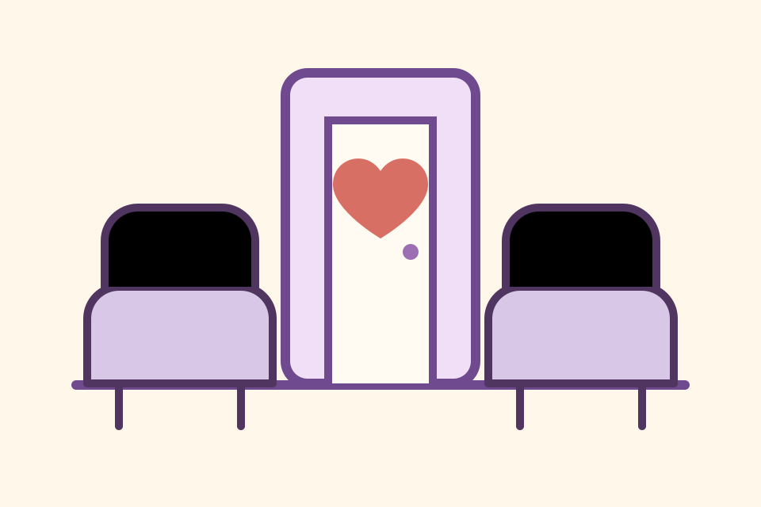

Evidence-led
Stories are reviewed for recurring patterns in emergency and specialist care access, not for public blame or individual disputes.
A public evidence project for emergency veterinary access
Emergency vet care, insurance limits, and the families left in between.
Care existed. Love existed. The money did not.
We collect owner stories about the moment emergency or specialist veterinary care was possible, but cost, insurance limits, reimbursement delays, upfront payment, or lack of fast support decided whether a family could reach it.

Stories are reviewed for recurring patterns in emergency and specialist care access, not for public blame or individual disputes.
This project is about the funding and insurance gap families face during crisis. Veterinary teams are not the target.
People can share as little as they want. Short answers are welcome, and anonymous use is optional.
If emergency medicine, imaging, surgery, hospitalisation, or specialist referral exists, what payment rails and insurance warnings would help families reach that care before the decision is already gone?
The project cannot help with current vet bills or give veterinary, legal, financial, or insurance advice. If a pet is in emergency care now, speak directly with the vet or emergency hospital.